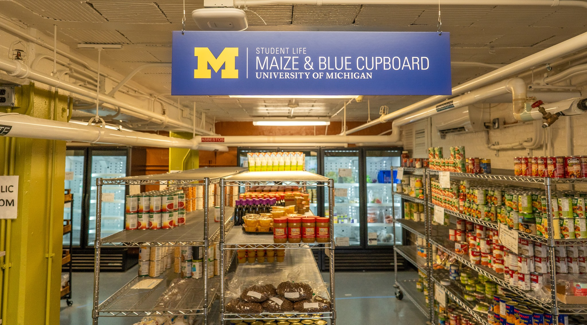

Maize & Blue Cupboard Website Redesign
Problem Statement
The existing site was static and difficult to navigate, so it no longer supported Maize and Blue Cupboard's (MBC) expanding services. Poor navigation, dense text, and accessibility gaps prevented students from finding food-shopping hours, eligibility details, or volunteer information.
About the Client / Course
Maize & Blue Cupboard is University of Michigan's on-campus food pantry. Our capstone course partnered us directly with MBC leadership to gain the needed insights to create a production-ready redesign that mirrors the pantry’s welcoming in-person experience.
Website Analysis
We ran surveys (49 responses), 4 student interviews, 6 first-time-user usability tests, and a Nielsen-Norman heuristic + WCAG 2.2 audit. We discovered several common themes through our research: hidden appointment link, confusing labels, dense FAQs, and colour-contrast errors.
Analysis Methods
- Survey & Likert-scale questions to prioritise features
- Thematic coding of interview transcripts
- Axe / WAVE scans (15 contrast & alt-text issues)
- Task timing & error counts vs. baseline site
Design
Insights drove low-fi sketches > mid-fi wireframes > hi-fi prototype. We re-architected navigation (six primary pages), introduced a “Make an Appointment” call-to-action, and added a “How to Help” mega-menu dividing Donate, Volunteer, and Host a Drive.
Design Evolution
Early homepages overloaded users with text. Peer and client reviews pushed us toward a cleaner carousel layout, a smaller welcome image, and a fixed donate button. Dropdown glitches uncovered in testing were rebuilt for keyboard access.
Key Design Decisions
- Visible appointment button on every page
- Break up FAQ into searchable, collapsible categories
- Real-time update panel for volunteering slots & pop-up pantry events
- High-contrast palette meeting WCAG AA
Final Result
In A/B tests the prototype raised task success to 100% (up 12%) and cut average completion time from 23s to 10s. Incorrect actions dropped 71%. Stakeholders were pleased with the results and approved the design for hand-off to Student Life Web Services. You can view the full final report here if you are interested in learning about our project in more detail.